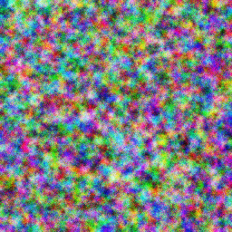
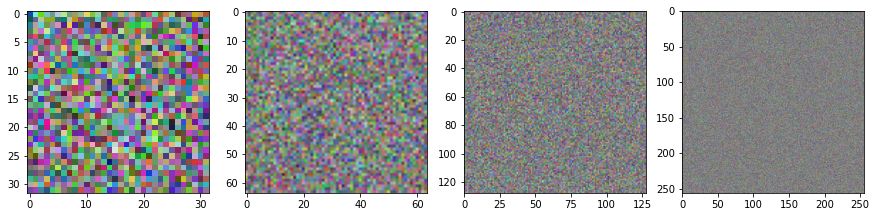

ims = ImStack()ImStack core
Defining the key ImStack class.
ImStack
ImStack (n_layers=4, base_size=32, scale=2, init_image=None, out_size=256, decay=0.7, device=device(type='cpu'))
This class represents an image as a series of stacked arrays, where each is 1/scale the resolution of the next. This is useful eg when trying to create an image to minimise some loss - parameters in the early (small) layers can have an effect on the overall structure and shapes while those in later layers act as residuals and fill in fine detail.
ims.to_pil()
ims.plot_layers()
Included functions
ImStack.__init__
ImStack.__init__ (n_layers=4, base_size=32, scale=2, init_image=None, out_size=256, decay=0.7, device=device(type='cpu'))
Constructs the Image Stack
Args: n_layers: How many layers in the stack base_size: The size of the smallest layer scale: how much larger each subsequent layer is init_image: Pass in a PIL image if you don’t want to start from noise out_size: The output size. Works best if output size ~= base_size * (scale ** (n_layers-1)) decay: When initializing with noise, decay controls scaling of later layers (avoiding too miuch high-frequency noise)
ImStack.forward
ImStack.forward ()
Sums the stacked layers (upsampling them all to out_size) and then runs the result through a sigmoid funtion. Resulting image is a tensor, with values between 0 and 1.
ImStack.preview
ImStack.preview (n_preview=2)
Creates an image using only the first n_preview layers. Useful if you want to optimise the first few layers before starting to optimize the entire stack.
ImStack.to_pil
ImStack.to_pil ()
Return the result as a PIL Image (useful for saving, transforming, viewing etc)
ImStack.save
ImStack.save (fn)
Save the image to a given filename (fn)
ImStack.plot_layers
ImStack.plot_layers ()
View the layers in the stack - nice to build intuition about what’s happening.